Before you get into the tutorial, you should be familiar with the dynamics of the cube, i.e how the cube moves, what are the pieces involved in solving the cube, etc.
| 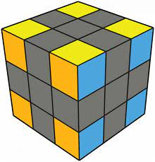 | Corner pieces - There are 8 corner pieces in a standard 3x3 Rubiks cube. The corners are present in 3 different panels, and can be oriented/moved in 3 different ways. |
| 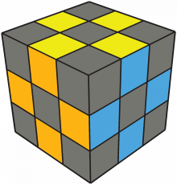 | Edge pieces - There are 12 edge pieces in a standard 3x3 Rubiks cube. These edge pieces can be present in 2 panels, hence they can be oriented in 2 ways. |
| 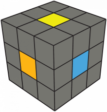 | Center pieces - There are 6 center pieces in a standard 3x3 Rubiks cube. These pieces are only preset in one panel, hence they are a single orientation piece. |
A set of algorithms are used to solve a cube. These algorithms are based off of the notations shown below.
The basic face turns are Up, Down, Right, Left, Front, and Back.
Each move implicates the turn that particular side clockwise.
| 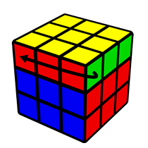 | 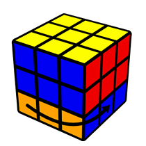 | 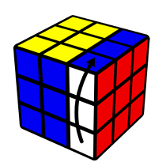 | 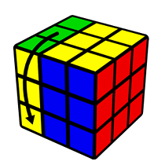 | 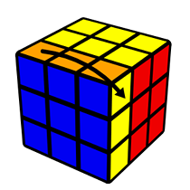 | 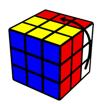 |
|---|---|---|---|---|---|
| U | D | R | L | F | B |
An apostrophe (pronounced as prime) means to turn the desired face in the opposite direction (counter-clockwise).
|
|
|
|
|
|
|---|---|---|---|---|---|
| U' | D' | R' | L' | F' | B' |
Wide moves turn 2 layers at once, and are listed with smaller case letters such as u, d, r, l, f, and b.
Each move implicates to turn that particular side clockwise.
 |
 |
 |
 |
 |
 |
|---|---|---|---|---|---|
| u | d | r | l | f | b |
Cube rotations are written using the letters x, y, and z.
x follows the R direction, y follows the U direction, and z follows the F direction.
| 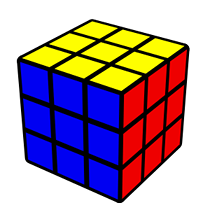 | 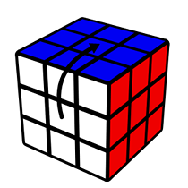 | 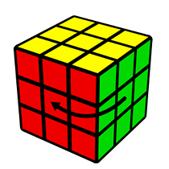 | 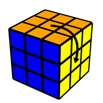 |
|---|---|---|---|
| No rotation | x | y | z |
Slice moves are written using the letters M, E, and S. Slice moves only turn the middle layer.
M follows the L direction, E follows the D direction, and S follows the F direction.
| 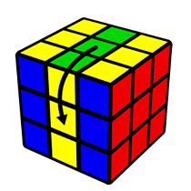 | 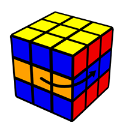 | 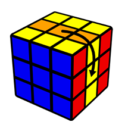 |
|---|---|---|
| M | E | S |
That's it! Now you have all the prior knowledge you need to start learning how to solve the cube. Head on to the tutorial tab, or click here.